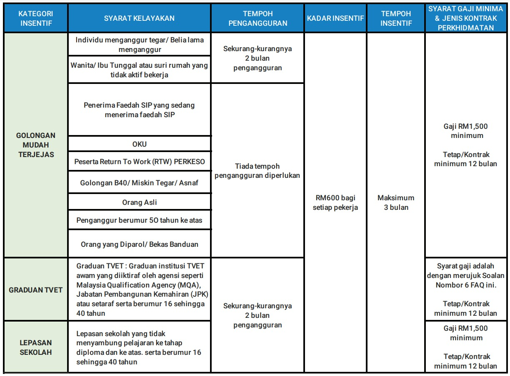
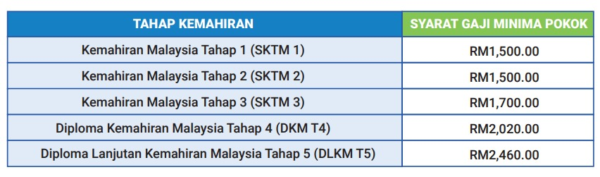

Pengenalan
- Program ini membabitkan penempatan pekerjaan oleh majikan bagi kumpulan sasar daripada kalangan individu/belia yang lama menganggur dan golongan mudah terjejas seperti orang asli, wanita, orang kurang upaya (OKU), miskin tegar, individu diparol serta bekas banduan di mana majikan akan diberi insentif penggajian sebanyak RM600 sebulan untuk tempoh 3 bulan
- Insentif penggajian sebanyak RM600 sebulan untuk tempoh 3 bulan ini juga dikhaskan bagi majikan yang mengambil pekerja baharu (placement) dalam kalangan graduan TVET (Pendidikan dan Latihan Teknikal dan Vokasional) atau lepasan sekolah yang menganggur bagi tempoh 2 bulan dan ke atas
- Tarikh penguatkuasaan Program Daya Kerjaya adalah pada 1 Mei 2023 bagi pengambilan pekerja mulai 1 Januari 2023
- Tarikh akhir permohonan untuk Program Daya Kerjaya adalah pada 31 Disember 2023 atau tertakluk kepada baki dana yang diperuntukkan atau sebarang keputusan terkini yang diwartakan oleh pihak Kerajaan
- Untuk maklumat lanjut, sila rujuk Laman Rasmi Perkeso
Objektif
- Menggalakkan sektor swasta menggaji pekerja dengan nilai yang lebih tinggi
- Merangsang permintaan pekerjaan dalam kalangan majikan dan meningkatkan peluang pekerjaan serta mengurangkan pengangguran
- Meningkatkan kebolehpasaran dalam kalangan pencari kerja
- Tiada had permohonan bilangan pekerja ditetapkan kepada majikan mengikut kelayakan kategori
Kategori Pengambilan di bawah Program Daya Kerjaya

Kelayakan
- Majikan hendaklah berdaftar atau mencarum di bawah Akta Keselamatan Sosial Pekerja 1969 (Akta 4) dan Akta Sistem Insurans Pekerjaan 2017 (Akta 800) sebelum 1 Januari 2023
- Majikan hendaklah mengiklankan jawatan dan melengkapkan profil majikan di Portal MYFutureJobs
- Majikan digalakkan mengambil calon pekerja dari senarai yang berdaftar dalam Portal MYFutureJobs. Sekiranya majikan mengambil calon pekerja selain dari senarai yang berdaftar dalam Portal MYFutureJobs, majikan hendaklah memastikan agar pekerja yang diambil tersebut kemudiannya berdaftar dengan Portal MYFutureJobs
- Pekerja hendaklah berdaftar dan melengkapkan profil di Portal MyFutureJobs (medan nama, nombor kad pengenalan, alamat, tahap pendidikan dan pengalaman kerja)
- Majikan digalakkan membayar gaji seperti yang diiklankan di dalam Portal MYFutureJobs atau gaji minima sebanyak RM1,500
- Majikan digalakkan membayar gaji bagi kategori Graduan TVET seperti rajah dibawah:
- Majikan adalah digalakkan untuk mengikut Panduan Gaji Permulaan 200 Pekerjaan Terpilih Berasaskan Kemahiran, Edisi Kedua (Tahun 2020) yang dikeluarkan oleh Kementerian Sumber Manusia bagi pengambilan pekerja dalam graduan TVET
- Syarat kelayakan gaji graduan TVET bagi program ini adalah seperti berikut. Panduan gaji ini merupakan pengenalan semula kadar gaji pokok permulaan agar setimpal dengan kemahiran yang dimiliki oleh Graduan TVET
- Majikan digalakkan untuk membayar gaji bagi kategori Lepasan Sekolah seperti yang diiklankan di dalam Portal MYFutureJobs atau gaji minima sebanyak RM1,500 bagi lepasan sekolah
- Majikan hendaklah mengemaskini tarikh berhenti kerja selewat-lewatnya 15hb bulan pada bulan berikutnya di Portal Kerjaya Madani – Daya Kerjaya atau Portal ASSIST sekiranya berlaku perubahan status pekerja
- Majikan dan pekerja hendaklah mematuhi garis panduan waktu bekerja selaras dengan Akta Kerja 1955 dan peraturan di bawahnya
- Majikan digalakkan mengambil calon pekerja dari senarai yang berdaftar dalam Portal MYFutureJobs
- Majikan tidak boleh memberhentikan pekerja sedia ada dengan niat untuk menggantikannya (substitute) dengan pekerja yang sama atau pekerja yang baharu bagi tujuan permohonan Program Daya Kerjaya diluluskan

*Nota: Gaji pokok yang dicadangkan ini tidak termasuk apa-apa elaun atau imbuhan lain (nilai tambah kepada gaji pokok permulaan yang merangkumi lesen atau sijil kompetensi tambahan yang dimiliki jika ada)
Dokumen Diperlukan
- Salinan akaun bank majikan (salinan hadapan yang tertera nama majikan, nombor akaun majikan dan nama bank)
- Salinan nombor pendaftaran perniagaan majikan yang telah disahkan oleh pihak Bank (Business Registration Number - BRN)
- Salinan pendaftaran SSM (Suruhanjaya Syarikat Malaysia)
- Salinan kad pengenalan pekerja (Depan dan Belakang)
- Salinan kontrak pekerjaan pekerja dimohon di bawah program ini
- Salinan Sijil Tamat Pengajian/Transkrip Penuh Akademik/Surat Pengesahan Tamat Pengajian bagi kategori permohonan Graduan TVET atau Lepasan Sekolah
- Borang Pengesahan Pekerja yang telah ditandatangani oleh pekerja dan majikan
- Bagi majikan sedia ada yang pernah memohon Insentif Penggajian (PenjanaKerjaya dan Jamin Kerja) sebelum ini yang telah diluluskan, rekod dokumen terdahulu akan disimpan secara automatik dalam Portal Kerjaya Madani – Daya Kerjaya. Walau bagaimanapun, majikan perlu mengemukakan dokumen tambahan yang berkaitan sekiranya diminta oleh PERKESO
Cara Memohon
- Majikan boleh membuat permohonan secara dalam talian di Portal Kerjaya Madani – Daya Kerjaya
Soalan Lazim
- Untuk maklumat lanjut, sila rujuk Soalan Lazim Program Daya Kerjaya-Pelanjutan Insentif Penggajian Secara Bersasar